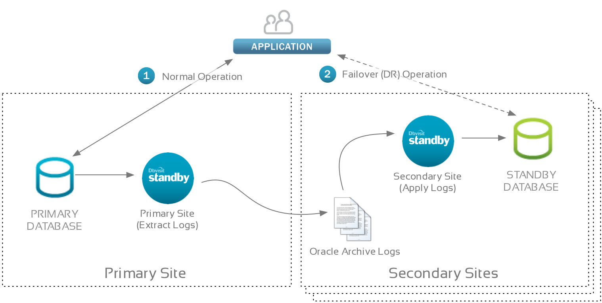
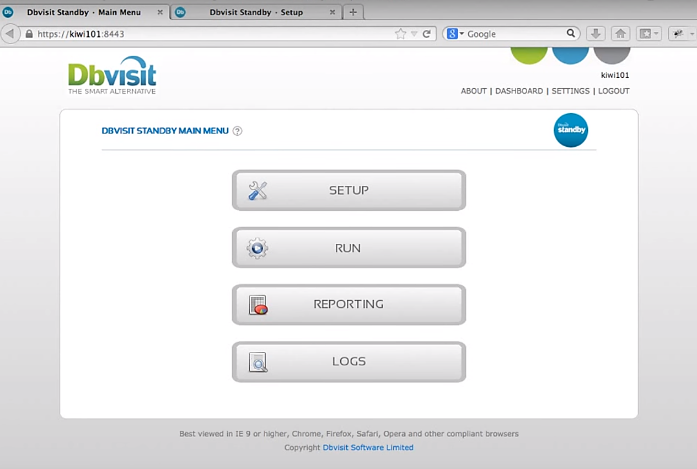
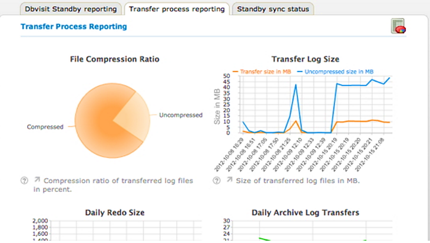
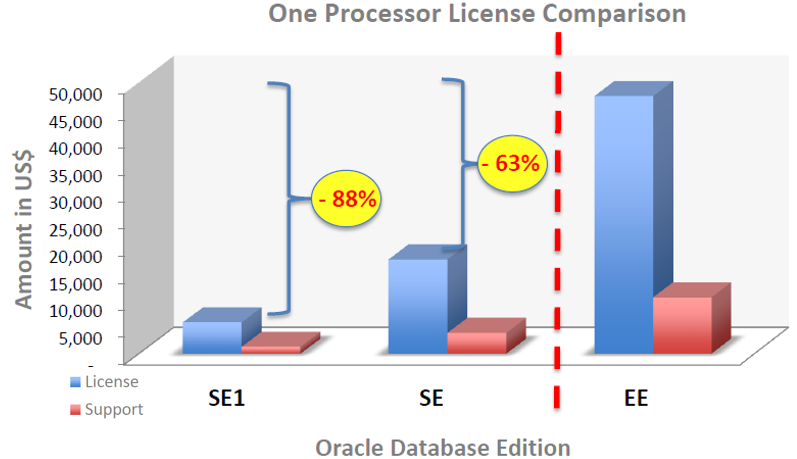
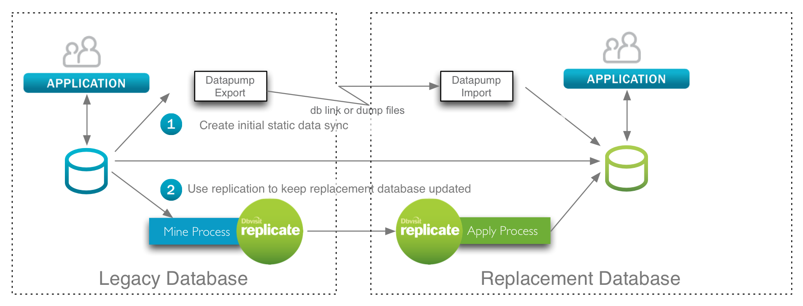
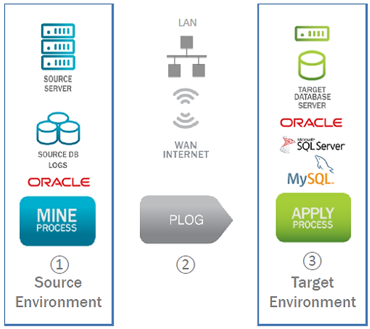
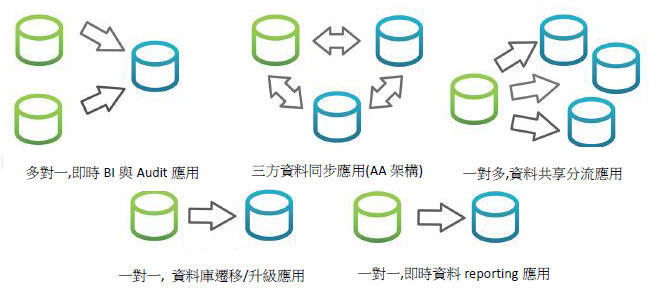
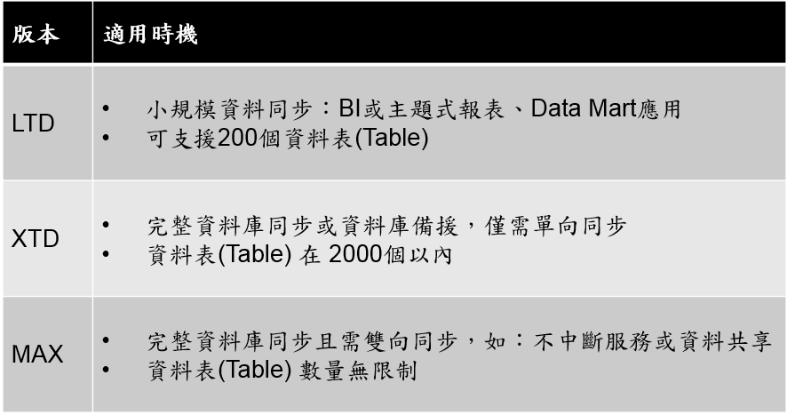
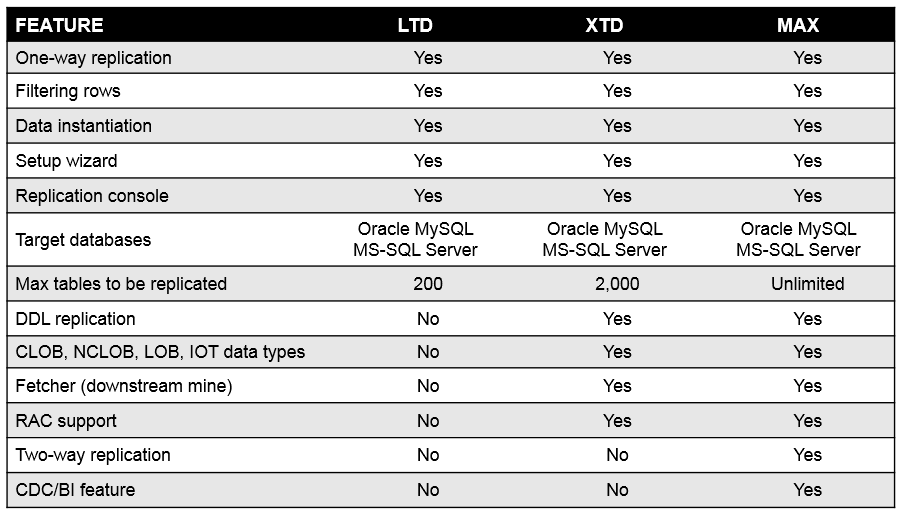

Dbvisit
Dbvisit是成立於2006年的紐西蘭公司，致力於Oracle資料庫的備援以及即時同步Solutions，做為Oracle專業服務人力起家的廠商，其具備了完整的Oracle DB技術能量，並且在這些基礎上開發出Dbvisit兩個產品線 - Dbvisit Standby與Dbvisit Replicate。
兩個產品線皆是透過豐富的Oracle資料庫技術與經驗來打造，可以完善替企業的Oracle資料庫做到Business continuity(營運持續) 和disaster recovery(災難備援)。Dbvisit Standby主要在進行Physical Replication透過一對一的完整資料庫複製來提供使用者可作為Standby Database的備援solution。Dbvisit Replicate則是以Logical Replicate的方式將資料即時同步至另一獨立資料庫並同時具備跨平台與跨OS的架構，提供使用者更多具有彈性的衍生應用，像是資料庫migration、real-time reporting、share loading以及data distribution等。目前全球Dbvisit共有900多個成功使用案例，並於美國、歐洲與亞洲國家都設有據點。
Oracle資料庫是國際上最知名並且受到廣泛使用的企業級資料庫，是台灣不少企業的首選，然而需要替這樣珍貴的資料庫進行相關架構(災難備援、即時同步等)卻是一件需具備不少門檻的作業，不論在技術上或者成本上都需要一定程度的投入，也因此往往成為企業對於這些資料庫的相關應用架構望之卻步的原因之一。Dbvisit便是一套專門替Oracle資料庫打造的軟體，分別提供與Oracle原廠同等級的災難備援與即時同步Solutions，相信可以成為您企業Oracle資料庫的聰明首選，下列將就Dbvisit不同的產品進行相關介紹：
-
資料庫王牌救援 – Dbvisit Standby
資料庫的備援一直是各企業系統架構上所重視的環節之一。透過備援的架構可以替企業提供Business continuity(營運持續)，以不中斷的資料複製和failover來保護企業的資料與前端的營運服務。
Dbvisit Standby是一款專門針對Oracle Database設計開發的資料庫備援軟體，其透過100%一對一的binary copy，建立起線上資料庫完整的復原機制，最適用做Standby Database與DR的架構。
-
完整的Oracle資料庫複製技術
Dbvisit Standby是一對一的Physical data replication，背後以‟Oracle-aware”技術(透過Oracle DB既有結構)設計，以確保資料copy簡單、直觀且完整。支援的資料庫包含Oracle 8i 以上的各種版本, EE, SE, SE One/Two and XE，並可以相容於多種平台包含Oracle Linux, Oracle Solaris, Windows, AIX, HP-UX, VM等。
其以排程schedule的方式，將source端的資料定期同步至standby database，並設計多種實用功能如Time-delay/configurable lag 應用、Archive log自動管理機制、壓縮加密選項、email告警機制與checksum value等來確保資料的複製完整。
-  圖1 Dbvisit Standby 資料庫備援架構
-
方便操作的使用者介面
Dbvisit Standby透過設計上透過同一個介面來管理多向的備援情況與細部configurations，包含資料傳遞同步時的過程、reporting產出、排程scheduling設定、資料傳輸壓縮比等，從設定到執行操作不需要再額外的管理工具使用。
-   圖2 Dbvisit Standby 操作介面圖
-
最具投資效益的Oracle Standby工具
Dbvisit Standby是與Oracle既有DataGurad同等級的資料庫備援solutions，然而想要使用DataGuard則必須具備Oracle Enterprise Edition的license授權。這對於既有是Standard Edition的使用者而言無疑是一筆鉅額的可觀花費。而Dbvisit Standby則沒有License上的限制，使用者可以在Standard Edition上使用Dbvisit Standby打造起與DataGuard同等級的資料庫備援架構並同時省下近80%的投資成本。
-  圖3 不同Oracle License的成本比較，使用Dbvisit Standby則不需要升級EE授權
-
資料庫同步強棒 – Dbvisit Replicate
隨著資料量的增長，企業開始重視可以針對資料做全面性即時的複製與同步作業工具，透過這樣的工具可以讓資料庫使用更為彈性與靈活，以達到與架構起像是資料庫升級migration、real-time reporting、share loading以及data distribution等的使用情境與需求滿足。
Dbvisit Replicate是一款專門針對Oracle Database設計開發的資料庫同步複製工具，其透過SQL Statements的方式保持資料間的即時性並廣泛支援跨版本與跨平台的系統環境，搭配友善性高與wizard式的操作介面，將是您資料庫同步複製的最佳選擇。
-
原廠同等級的資料庫複製技術
Dbvisit Replicate是與Oracle既有的Golden Gate具備一樣作業原理的即時同步複製工具，其透過redo log-based資料的mining與applying技術，讓資料在source與target端間可以達到real time的同步，並且不會影響線上作業與降低延遲的複製。
-

圖4 Dbvisit Replicate 資料庫同步架構
在進行log mining時，Dbvisit Replicate無需啟動資料庫Trigger機制並可完整同步資料庫schema或特定table包含DDL與DML資料異動複製，以及特殊data type 如LOB的support，此外其還可以做資料同步衝突自動化檢測、處理與解決。
-
多面向彈性衍生應用架構
Dbvisit Replicate提供資料庫間彈性的同步複製機制，並可以提供一對一、一對多、單向與雙向以及跨平台(目前支援Oracle/ SQL Server/ MySQL) 與OS的使用，讓您可以依照您的需求架構起資料庫升級migration、real-time reporting、share loading以及data distribution等的使用情境應用。
-  圖5 Dbvisit 跨平台與OS的支援
-  圖6 Dbvisit架構使用方式與情境
-
同等級產品最低成本選擇
在即時同步的工具上，Dbvisit Replicate計價更為彈性，其以table數量來切分不同版本，最貼近使用者的需求，並且具備短中期的使用授權(term license)，讓不同需求(尤其for migration purpose) 的使用者更具實際的使用效益。
-  